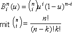
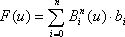
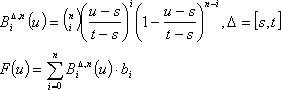
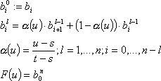
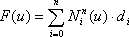
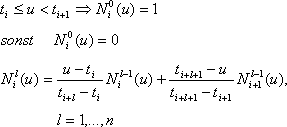
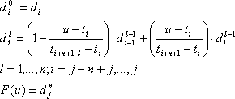

Bézier- und Spline-Kurven
Mathematische Reize
Wer als Anwender mit Bézier-Kurven harmonische Rundungen von Autoblechen am Rechner gestaltet, braucht keine höhere Mathematik. Programmierern bleibt sie nicht erspart.
Carsten Dachsbacher
Die steigende Rechenleistung moderner CPUs und die Entwicklung hochleistungsfähiger 3D-Grafikkarten haben dazu geführt, dass professionelles Modelling Einzug in Computerspiele gehalten hat. Die Grundlage für Modelling sind parametrische (glatte, gekrümmte) Flächen. Eine parametrische Fläche legen Sie durch Basisfunktionen und Stütz-/Kontrollpunkte fest. Die Grundlagen für die Basisfunktionen und deren Auswertung lesen Sie in diesem Beitrag. Zunächst zeichnen Sie Kurven. Deren Form verändern Sie durch die Position der Stützpunkte. Mit diesem Handwerkszeug meistern Sie auch die Flächen im dreidimensionalen Raum. Für eine parametrische Kurve geben Sie – wie bei Flächen – eine Reihe von Basisfunktionen und Stützpunkten an. Die Bézier-Kurven sind die bekanntesten parametrischen Kurven. Sie wurden um 1960 entwickelt und in der französischen Automobilindustrie zum Karosseriedesign verwendet (Computer Aided Geometric Design, CAGD). Die Basisfunktionen, die Sie bei Bézier-Kurven verwenden, heißen Bernstein-Polynome. 
Diese Funktionen besitzen drei Variablen:
• u ist der Laufindex und nimmt Werte zwischen 0 und 1 an.
• n ist eine Ganzzahl und gibt den Grad der Kurve an. Das ist zum einen die höchste Potenz, in der die Laufvariable vorkommt, zum anderen bestimmen Sie dadurch die Zahl der Stützpunkte.
• Die Bézier-Kurve hat (n+1) Stützpunkte. Für verschiedene Indizes i erhalten Sie verschiedene Funktionen (abhängig von der Variablen u). Die Funktionswerte liegen im Intervall von [0,1]. Sie stellen die Gewichtung der einzelnen Stützpunkte dar, was auch in der Formel für Bézier-Kurven zu sehen ist.

Der Stützpunkt bi wird mit dem Bernstein-Polynom i vom Grad n multipliziert. Alle Punkte, die Sie für u zwischen 0 und 1 erhalten, liegen auf der Bézier-Kurve. Nehmen Sie eine direkte Auswertung mit den Bernstein-Polynomen vor. Diese sieht wie folgt aus:
// Koordinate d des Punkts abhängig von u: d = F(u)
d.x = d.y = 0;
for (i = 0; i < grad; i++)
{
d = d + (b[i] * bernstein(u, i));
}
...
// wertet Bernstein-Polynom aus
double bernstein(double u,long i)
{
return bin(grad, i) * pow(u, i) * pow(1.0-u, grad-i);
}
// berechnet Fakultät von n
double fac(long n) {
double r = 1.0;
for (i = 2; i <= n; i++)
r *= (double)i;
return r;
}
// Binomialkoeffizient
double bin(long n, long k)
{
return fac(n) / (Fac(n-k) * Fac(k));
}
Der Sourcecode 2dvector.c zeigt eine definierte Vektorstruktur und überladene Operatoren-Anwendung. Bevor Sie die Bézier-Kurven genauer betrachten, verallgemeinern Sie die Formel zu einem beliebigen Intervall [s,t] für die Variable u: 
Eigenschaften von Bézier-Kurven
Bézier-Kurven für u aus [s,t] liegen in der abgeschlossenen konvexen Hülle. Die konvexe Hülle einer Punktmenge können Sie so veranschaulichen, dass Sie mit einer gespannten Schnur versuchen, alle Punkte einzuschnüren. Weiterhin können Sie sehen, dass die Bézier-Kurve im ersten Stützpunkt b0 beginnt und im letzten b3 endet (Endpunkt-Interpolation).
Die Kurve endet nicht nur in den Endpunkten des Kontrollpolygons, sie verläuft dort auch tangentiell an den Kanten der Kontrollpolygone. Weiterhin sind Bézier-Kurven affin invariant : Bei einer affinen Transformation (eine Drehung und/oder eine Verschiebung) der Kontrollpunkte wird die Kurve mittransformiert, behält aber ihre Form.
Die Kurve schwankt nicht stärker als ihr Kontrollpolygon (Variation-Diminishing-Property, variationsreduzierend). Sie zeichnen Bézier-Kurven nicht punktweise, doch Sie werten die Bernstein-Polynome für jeden Punkt aus. Stattdessen approximieren Sie am Bildschirm die Kurve mit vielen Linien. Die Zahl der Linien hängt von der Größe der Kurve auf dem Bildschirm und der Auflösung ab. Die Linien können Sie schneller zeichnen als die einzelnen Pixel, deren Position Sie rechenintensiv auswerten müssten.
Der de-Casteljau Algorithmus
Ein schnellerer Auswerte-Algorithmus – nicht für die Bernstein-Polynomen – für die Punkte auf Bézier-Kurven ist der de-Casteljau-Algorithmus. Er bestimmt die Koordinate eines Kurvenpunktes durch schrittweise Unterteilung des Kontrollpolygons.
Formal benötigen Sie folgende Definitionen, wobei Sie die Variablen wie folgt deuten können: 
Den eigentlichen Clou beim de-Casteljau-Algorithmus mit dem Ziel, die Kurve schnell mit Linien zu approximieren, sehen Sie im rechten Teil des Bildes: Die Punkte, die Sie als Zwischenergebnis am Rand der de-Casteljau-Pyramide erhalten, sind die Kontrollpunkte zweier neuer Bézier-Kurven, die zusammen die bisherige Kurve ergeben. Mit einem Unterschied: Die neuen Kontrollpolygone liegen näher an der tatsächlichen Bézier-Kurve. Wenn Sie also den de-Casteljau-Algorithmus rekursiv auf die neuen Bézier-Kurven anwenden, erhalten Sie Kontrollpolygone (Linienzüge), mit denen Sie die Bézier-Kurve zeichnen. Der de-Casteljau-Algorithmus lässt sich effizient implementieren, wie Sie dem Codeausschnitt im Quellcode entnehmen. Dieser zeigt eine Mittelpunktsunterteilung (alpha=0.5).
Wenn Sie Flächen mit vielen Details modellieren wollen, müssen Sie Bézier-Kurven mit einem hohen Grad n verwenden. Ändern Sie den Ort eines Kontrollpunkts, ändern Sie damit die ganze Kurve. Das umgehen Sie, indem Sie mehrere Bézier-Kurven von niedrigerem Grad (zum Beispiel kubisch, n=3) aneinanderhängen. Die Flächen lassen sich leicht lückenlos aneinander fügen, da die Kurven am Endpunkt interpolierend sind. Entscheidend für die Darstellung ist auch die Steigung und Krümmung der Kurven an den Anschlussstellen. An einer Anschlussstelle entscheidet sich, ob Sie einen unerwünschten Knick erhalten. Im Automobilbau gibt es eine weitere Anforderung: Die Kurven müssen am Anschlusspunkt auch in der zweiten Ableitung gleich sein. Sonst ist der Übergang bei Reflexionen, zum Beispiel auf Autolacken, sichtbar. Im unteren Teil des rechten Bildes auf der vorigen Seite sehen Sie die geometrischen Bedingungen, die zwei Bézier-Kurven erfüllen müssen, um den entsprechenden Anforderungen zu genügen. Trotz der etwas umständlichen Beschreibung detailreicher Flächen haben sie aber trotzdem eine Existenzberechtigung: Rechner werten Bézier-Kurven effizient und in Echtzeit aus. Damit haben Bézier-Flächen die Eigenschaften, die für Echtzeit-Rendering von Vorteil sind.
B-Spline-Kurven
B-Spline-Kurven sind eine neue Gattung mathematischer Kurvenbeschreibungen. Wir beschäftigen uns mit B-Spline-Kurven, die die Eigenschaft der affinen Invarianz (Begriff: siehe oben) mitbringen. Die Definition eine B-Spline-Kurve lautet: 
Die Stützpunkte bezeichnen Sie mit di (de-Boor-Punkte, nach Carl de Boor). Zusätzlich gibt es einen Knotenvektor t, dessen Werte sich in den rekursiv definierten B-Spline-Basisfunktionen niederschlagen: 
Im Bild oben rechts sehen Sie Basisfunktionen vom Grad 0 bis 2. Daran können Sie einen Vorteil gegenüber den Bernstein-Polynomen als Basisfunktionen ablesen: Die B-Spline-Funktionen sind nur in einem begrenzten Bereich ungleich Null. Bernstein-Polynome sind im gesamten Bereich, in dem sich die Laufvariable u befindet, ungleich Null. Dies ist gleichbedeutend damit, dass ein Kontrollpunkt nur auf einem sehr begrenzten Bereich der Kurve Einfluss ausübt. Damit können Sie an bestimmten Teilen eine B-Spline-Kurve detailreich modellieren, ohne die Kurve zu ändern.
B-Spline-Basisfunktionen vom Grad n sind stückweise polynomiell (durch Polynome beschreibbar) und bieten deshalb optimale Glattheit. Dadurch werden die geometrischen Übergangsbedingungen überflüssig. Um ein Gefühl für die Auswirkungen des Knotenvektors auf die Kurve zu bekommen, experimentieren Sie am besten mit unserem Beispielprogramm. Der Knotenvektor hat so viele Werte wie Grad n plus Anzahl der Stützpunkte plus 2. Der Knotenvektor beeinflusst den Verlauf der Kurve innerhalb der konvexen Hülle des Kontrollpolygons. B-Spline-Kurven sind zum Beispiel nur Endpunktinterpolierend, wenn jeweils die ersten (n+1) und die letzten (n+1) Werte des Knotenvektors gleich sind.
Die direkte Auswertung der B-Splines können Sie mit folgendem Codeausschnitt berechnen. Beachten Sie die Spezialfälle für den Knotenvektor bei der Rekursion im Listing bspline.c.
Betrachten Sie eine B-Spline-Kurve vom Grad n mit m de-Boor-Punkten und einem Knotenvektor t. Nutzen Sie die folgenden Eigenschaften, um Kurven gezielt zu modellieren:
• Fallen n de-Boor-Punkte zusammen (sind also identisch), so verläuft die Kurve durch diesen Punkt und liegt dort tangentiell an dem Kontrollpolygon an. Damit können Sie Ecken in der Kurve modellieren.
• Wenn Sie n de-Boor-Punkte auf einer Geraden platzieren, berührt die Kurve diese Gerade. Wenn sich (n+1) Punkte auf einer Gerade befinden, liegt ein Abschnitt der Kurve auf dieser Geraden.
• Fallen n Knoten (Werte im Knotenvektor) zusammen, also t=ti +1=...=ti+n, so gilt F(t)=di. Das heißt, dass die Kurve durch einen Kontrollpunkt verläuft und dort tangentiell am Kontrollpolygon anliegt.
• Als letzte Eigenschaft können Sie die „lokale konvexe Hülle“ ausnutzen. Für ein u im Intervall [ti, ti+1] liegt die Kurve in der abgeschlossenen konvexen Hülle der (n+1) vielen Kontrollpunkte di-n, ..., di.
Der de-Boor-Algorithmus
Auch für B-Spline-Kurven gibt es elegante Algorithmen zur Auswertung, die aber trotzdem rechenintensiver als die für Bézier-Kurven sind. Als Pendant zum de-Casteljau-Algorithmus gibt es für B-Spline-Kurven den – rekursiv definierten – de-Boor-Algorithmus. Seine Definition: 
Um ihn anschaulich darzustellen, bedarf es einer anderen Darstellung der B-Spline-Kurve, der so genannten Polarform.
Laut Definition gilt der de-Boor-Algorithmus nur für Parameter aus dem Intervall [tj , tj+1 ]. Folgender Programmcode berechnet den de-Boor-Algorithmus für die Kurve an der Stelle u vom Grad l im Intervall [t(i), t(i+1)]:
//VECTOR deBoor(double u,long l,long i)
{
if(l == 0)
// letzte ausgewertete Stelle
// im letzten Intervall !
if(i == nKontrollPunkte)
return d[nKontrollPunkte - 1];
else
return d[i];
double t2 = (u - t[i])/ (t[i + grad + 1 - l] - t[i]);
double t1 = 1.0 - t2;
return deBoor(u, l-1, i-1)
* t1 + deBoor(u, l - 1, i) * t2;
}
Wenn Sie eine Spline-Kurve an der Anzahl steps Stellen pro Intervall des Knotenvektors auswerten wollen, verwenden Sie folgenden Code:
//Speicher ausreichend Punkte
VECTOR result[GENUGPUNKTE];
int nPunkte = 0;
// Kurvengrad n, „steps“-Stellen
// „nIntervals“ im Knotenvektor
for(i = n; i < nIntervals + n; i++)
{
// Vorraussetzung im de Boor Algorithmus
if(t[i + 1 ] > t[i])
{
for(j = 0; j <= steps; j++)
{
double u = t[i] + (double)j *
(t[i + 1] - t[i]) / (double)steps;
result[nPunkte++] = deBoor(u, grad, i);
}
}
}